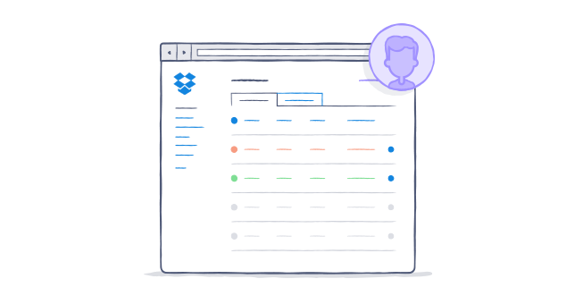

Master the Admin Console
Take a few minutes to get to know the Admin Console's key features.
The Admin Console is the central place for onboarding, monitoring activity, setting your team's security options, and managing your billing information.
Understanding the Admin Console

Here's a quick rundown of each section within your Admin Console:
- Dashboard - Gather key insights on your team's activities, access shortcuts to important admin actions, and quickly find members to manage their accounts.
- Members - Add/delete team members, monitor their activity and take quick actions (e.g., reset passwords or add another member as an admin).
- Activity - Monitor your entire team by viewing specific events or creating full reports across specific dates. You can get more detailed info by clicking on a team member's name.
- Authentication - Set up single sign-on to let your team members log in using their corporate credentials, or add an extra layer of security by encouraging team members to use two-step verification.
- Sharing - Decide whether new shared folders and new shared links are "team only" or accessible to non-team members, too.
- Team folder - Use a team folder to automatically share with your entire team. Only admins can create or delete a team folder.
- Account - Add more licenses to your plan, view your current plan, update billing information, and review billing history.
- Help - Get access to our self-service resources like our Help Center and this guide, or contact your account team for additional help.
Was this article helpful?
:) Yes
:( No
← Previous
Next →